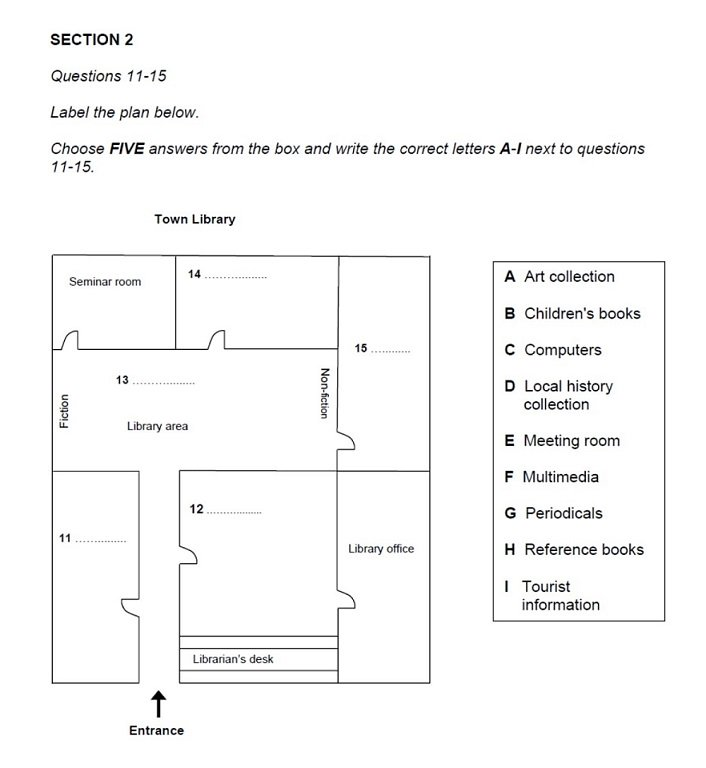

Test day only has surprises if you have not met the format. This lesson walks through 11 Reading task types and 6 Listening task types — every question shape the examiner is allowed to use. Each type gets a mini text or transcript, the questions themselves, the exact strategy that beats them, and the answer key.
Reading types
11 formats
Listening types
6 formats
Mini-drills
17 × short
Auto-scored
69 points
01
What this lesson does
Reading has 40 questions across 3 passages in 60 minutes. Listening has 40 questions across 4 sections in 30 minutes (+ 10 to transfer answers on paper). The examiner draws from a fixed menu of task types — and once you can name the type on sight, you know the strategy for it.
Below: the atlas. Each type gets its own card with a mini-example short enough to solve in 2–4 minutes. Do them in order first; the ones that trip you up become your homework this week.
Why 17 mini-drills, not 2 full tests: a full Cambridge test doesn't tell you which task types you are weakest at — it just tells you your band. This atlas tells you exactly which formats to target before you do a real timed mock next week.
02
Task-type vocabulary — tap to flip
14 terms that describe how IELTS asks its questions. Learn the metalanguage and instructions become transparent.
skim
verb
read quickly for main idea
Skim the passage in 2 minutes.
scan
verb
search for a specific fact
Scan for dates and numbers.
paraphrase
verb
restate in different words
Questions paraphrase the passage.
synonym
noun
word with the same meaning
Look for synonyms of keywords.
distractor
noun
wrong option that looks right
Every MCQ has three distractors.
inference
noun
an idea implied, not stated
Views questions test inference.
claim
noun
what the writer states as true
Y/N/NG tests writer's claims.
heading
noun
short title of a paragraph
Match headings to paragraphs.
cohesion
noun
how sentences link together
Endings must fit for cohesion.
keyword
noun
the word you scan for
Underline keywords in the question.
signposting
noun
words that mark structure
"However" is a signposting word.
stem
noun
the question sentence to complete
Read the stem before the options.
signal word
phrase
audio cue that answer follows
"So the total is…" signals a number.
referencing
noun
pronouns pointing back to nouns
"This" refers to the last idea.
Flipped0/ 14
R
Reading Atlas · 11 task types
Each card = one type. Read the shared micro-passage where noted; new mini-passages are inline. Answer keys open at the bottom.
Shared micro-passage · Types R-01, R-02, R-03, R-04 — read once, use for four drills below.
The Second Life of Coral Reefs
For most of the 20th century, coral reefs were treated as fixed features of the ocean floor — living structures that were either healthy or bleached, present or destroyed. Recent research has begun to challenge that binary. Scientists at the University of Queensland now argue that some reef systems, particularly those in the western Pacific, are more accurately described as dynamic assemblies — capable of collapse in one decade and partial regeneration in the next, provided that key conditions are met.
Dr Amina Choi, who leads the Queensland Reef Recovery Project, has spent eleven years documenting Osprey Reef, roughly 350 kilometres north-east of Cairns. In 2011, a marine heatwave killed almost 70 per cent of the reef's hard coral. Ten years later, satellite imagery and diver-led surveys revealed that coral cover had returned to 41 per cent — well short of the pre-heatwave figure of 82 per cent, but far higher than models had predicted. "The recovery is real, but it is fragile," Choi says. "A second heatwave in that decade would almost certainly have wiped it out."
What made the difference at Osprey, according to Choi's team, was the reef's relative isolation — a distance of over 200 kilometres from the nearest agricultural runoff, and only limited tourist traffic. Reefs closer to the coast, exposed to fertiliser sediment and diesel from tour boats, showed almost no recovery over the same period. Choi is careful to note that isolation alone is not a strategy governments can pursue: what her data supports, she argues, is targeted reduction of local stressors on reefs already stressed by heat.
The findings have been welcomed by conservation bodies but resisted by parts of the fishing industry, which fear new zoning restrictions. The Australian federal government has commissioned a review; results are expected in 2027.
A question stem followed by 3–4 options (A / B / C / D). Usually one correct answer. Occasionally the instruction says "choose two" — then two.
Strategy: underline the keyword in the stem, scan the passage for a paraphrase of it, then read the surrounding two sentences carefully. Do not answer from options alone.
1. What is the writer's main point about coral reefs in the first paragraph?
2. At Osprey Reef, coral cover in 2021 was:
3. According to Dr Choi, the key factor in Osprey's partial recovery was:
Answer key · R-01 · Multiple Choice
1 — C (the "binary" view is being challenged — para 1)
2 — B (41% vs pre-heatwave 82%, higher than models predicted)
3 — D (isolation from agricultural runoff + tour boats — para 3)
Score0/ 3
2 Reading · True / False / Not Given
What it looks like
Statements of fact. You decide whether the passage confirms, contradicts or simply does not mention each one.
Strategy:TRUE = passage says the same. FALSE = passage actively contradicts. NOT GIVEN = the passage neither confirms nor contradicts. If you're arguing from your own knowledge → almost always NG.
4. Osprey Reef lost more than half its hard coral in the 2011 heatwave.
5. Coral cover at Osprey has now fully returned to its pre-heatwave level.
6. Dr Choi's team is the largest research group at the University of Queensland.
7. Reefs closer to the coast showed almost no recovery.
Answer key · R-02 · T/F/NG
4 — TRUE ("almost 70 per cent" = more than half · para 2)
5 — FALSE (41% vs 82% pre-heatwave — well short of pre-heatwave · para 2)
6 — NOT GIVEN (text does not compare her team's size to others)
7 — TRUE ("showed almost no recovery over the same period" · para 3)
Score0/ 4
3 Reading · Yes / No / Not Given
What it looks like
Same format as T/F/NG — but the statements now describe the writer's opinion or claim, not facts. Answer YES if the writer agrees, NO if the writer disagrees, NG if the writer has not expressed a view.
Strategy: hunt for opinion signals — "argue", "claim", "believe", "welcome", "resist". Cross-check the option against what the writer thinks, not what a source says inside a quote.
8. The writer believes the recovery at Osprey Reef is a genuine phenomenon.
9. The writer suggests isolation is a strategy governments should adopt.
10. The writer thinks the fishing industry's fears are unfounded.
Answer key · R-03 · Y/N/NG
8 — YES (writer frames the recovery neutrally as "real, but fragile" — endorsed)
9 — NO (Choi says isolation is not a strategy governments can pursue — writer relays this view without dissent)
10 — NOT GIVEN (writer reports the industry's fears without evaluating them)
Score0/ 3
4 Reading · Matching Information to Paragraphs
What it looks like
Statements are given; you decide which paragraph contains each. Paragraphs are labelled A, B, C… A paragraph may hold more than one, and some may hold none.
Strategy: do this task last in a passage — after you already know its shape from the other question types. Match on specific detail, not general topic.
Passage paragraphs (Coral Reefs): A = para 1 (challenging the binary view) · B = para 2 (Osprey case, 11-year study) · C = para 3 (why recovery happened) · D = para 4 (industry pushback + government review).
11. An exact figure for coral cover before a heatwave.
12. A caution against over-generalising from one reef.
13. Concern from a specific industry.
14. A phrase describing reefs as "dynamic assemblies".
Answer key · R-04 · Matching Information
11 — B (pre-heatwave 82 per cent · Osprey · para 2)
12 — C (Choi careful to note isolation is not a strategy governments can pursue)
13 — D (fishing industry · new zoning restrictions)
14 — A (paragraph 1 · "dynamic assemblies")
Score0/ 4
5 Reading · Matching Headings
What it looks like
A list of ~8 headings; the passage has 5–6 paragraphs; you pick the best-fitting heading for each. There are always more headings than paragraphs.
Strategy: match on angle, not shared vocabulary. Read the first sentence and last sentence of each paragraph — the middle rarely helps.
Mini-passage · Museum funding models. Match paragraphs A–D to the correct heading.
A. Britain's decision in 2001 to abolish entry charges at national museums transformed attendance overnight. In the year that followed, visitor numbers at Tate and the British Museum roughly doubled, and the largest gains came from lower-income households — precisely the audience the free-entry policy was designed to reach.
B. In the United States, the picture looks different. Most private museums depend on wealthy patrons whose donations are tied to specific acquisitions or wings. The naming rights on gallery walls tell that story clearly. This model funds spectacular buildings but rarely underwrites free access.
C. Continental European museums generally sit between the two extremes. The Louvre and the Prado charge a modest entry fee for permanent collections and use ticketed blockbuster exhibitions to subsidise conservation and staff costs. Concession schemes for students and residents soften the equity concern.
D. No single model is perfect. Free entry is politically popular but funding gaps often follow. Patronage produces landmark architecture but skews collections towards donor taste. Hybrid ticketing works commercially but requires disciplined pricing and a strong brand.
Heading list:
i — The trade-offs of each approach
ii — A donor-driven system
iii — When free entry works
iv — A history of the British Museum
v — The rise of digital ticketing
vi — A middle path with concessions
vii — Why museums close
15. Paragraph A
16. Paragraph B
17. Paragraph C
18. Paragraph D
Answer key · R-05 · Matching Headings
15 — iii · When free entry works (para A · UK 2001 policy · doubled attendance)
16 — ii · A donor-driven system (para B · US patronage · naming rights)
17 — vi · A middle path with concessions (para C · Louvre / Prado + concession schemes)
18 — i · The trade-offs of each approach (para D · "no single model is perfect")
Score0/ 4
6 Reading · Matching Features
What it looks like
You match statements to a list of features — typically people, places, studies, time periods. A feature may be used more than once or not at all.
Strategy: the answers cluster — once you find one, the next answer is usually in the same or adjacent paragraph. Underline every proper noun before you start.
Three researchers presented findings at the 2023 European Heritage Symposium. Dr Marta Kowalski, of the Warsaw Institute, argued that mass tourism has been catastrophic for the smaller Baroque churches of central Kraków — she cited humidity fluctuations from body heat as the main culprit. Professor Ilias Vardakis, from Athens, pushed back: his fifteen-year dataset on the Acropolis, he said, shows that visitor management, not visitor numbers, drives conservation outcomes. Dr Yuki Hara, based in Kyoto, contributed a third view — that neither figure captures the more subtle threat of everyday micro-vibration from foot traffic. All three agreed on one point: current climate control systems, designed in the 1980s, are inadequate for modern visitor volumes.
Features: K Dr Kowalski · V Prof Vardakis · H Dr Hara · ALL all three
19. Believes how visitors are managed matters more than how many there are.
20. Identifies humidity as the primary damage mechanism.
21. Focuses on damage from vibration, not from air quality or numbers.
22. Agrees that current climate systems no longer meet today's needs.
Answer key · R-06 · Matching Features
19 — V (Vardakis · management not numbers)
20 — K (Kowalski · humidity from body heat)
21 — H (Hara · micro-vibration from foot traffic)
22 — ALL (unanimous on climate control being inadequate)
Score0/ 4
7 Reading · Matching Sentence Endings
What it looks like
A list of sentence beginnings; you pick the correct ending from another list. There are always more endings than beginnings.
Strategy: two filters. (1) The ending must be grammatically possible after the beginning. (2) It must match the meaning in the passage. Use grammar to eliminate first, then check meaning.
Use the Coral Reefs passage at the top. Match beginnings 23–26 with endings A–H.
Ending list:
A — killed almost 70 per cent of the reef's hard coral.
B — is fragile and depends on no second heatwave.
C — showed almost no recovery over the same period.
D — welcomed the findings.
E — will publish its report in 2027.
F — cannot be pursued by governments.
G — always requires artificial coral seeding.
H — happens automatically after a heatwave.
23. The 2011 marine heatwave at Osprey…
24. According to Dr Choi, Osprey's recovery…
25. Reefs closer to the Australian coast…
26. Conservation bodies…
Answer key · R-07 · Matching Sentence Endings
23 — A (para 2 · killed almost 70%)
24 — B (para 2 · "recovery is real, but it is fragile")
25 — C (para 3 · almost no recovery)
26 — D (para 4 · welcomed by conservation bodies)
Score0/ 4
8 Reading · Sentence Completion
What it looks like
You complete sentences using words taken directly from the passage. Instructions say the maximum — usually NO MORE THAN TWO WORDS or NO MORE THAN THREE WORDS AND/OR A NUMBER.
Strategy: if you write "the coral" when the limit is one word, it counts as wrong. Count words. Copy exactly — spelling counts.
Complete the sentences using words from the Coral Reefs passage. NO MORE THAN TWO WORDS.
27. Dr Choi leads a project studying reef…
28. Osprey Reef lies northeast of the city of…
29. Recovery at Osprey exceeded what had been produced by…
30. The industry that fears new restrictions is the…
Answer key · R-08 · Sentence Completion
27 — recovery (Queensland Reef Recovery Project)
28 — Cairns (para 2 · 350 km north-east of Cairns)
29 — models (para 2 · higher than models had predicted)
30 — fishing industry (para 4 · resisted by parts of the fishing industry)
Score0/ 4
9 Reading · Summary / Note Completion
What it looks like
A short summary of part of the passage with numbered gaps. You either fill from a word list or from the passage itself. Instructions state the source.
Strategy: read the summary first — you now know which section of the passage to reread carefully. Do not skim; the summary is dense with content words.
Complete the summary using words from the passage. ONE WORD ONLY per gap.
The Osprey Reef case · summary
The Queensland Reef Recovery Project has documented the partial return of Osprey Reef. The 2011 heatwave killed most of the reef's coral, but by 2021 cover had climbed to per cent. Dr Choi identifies the reef's as the crucial factor — but warns that this cannot be a national . Meanwhile, sections of the local industry oppose the findings, and a formal is due to conclude in 2027.
Answer key · R-09 · Summary Completion
31 — hard (hard coral)
32 — 41 (per cent)
33 — isolation (relative isolation)
34 — strategy (not a strategy governments can pursue)
35 — fishing (fishing industry)
36 — review (federal government has commissioned a review)
Score0/ 6
10 Reading · Diagram / Flow-chart Labelling
What it looks like
A visual — a diagram, a stage-by-stage process, or a piece of equipment — with labelled boxes to complete. Words come from the passage.
Strategy: the labels always follow the passage in order — top to bottom, or clockwise. Find the paragraph that describes the process, then read line-by-line while filling the diagram.
Mini-passage · How salt is harvested in Guérande. Sea water enters the network through a single gate at high tide and is held in a large first pond called the vasière. From there it is released slowly into shallower evaporation basins — the cobiers — where the sun begins to reduce it. After several days the concentrated brine is moved on to the fares, where evaporation continues. In the final stage the brine is transferred to the œillets, small square pans where crystallised salt is raked by hand each evening. The harvested salt is stored in wooden sheds called trémets before sale.
Complete the labels · one word each from the passage
37. First large pond
38. Shallow basins where the sun starts reducing the water
39. Square pans where salt is raked each evening
40. Wooden storage sheds
Answer key · R-10 · Diagram / Flow-chart
37 — vasière
38 — cobiers
39 — œillets
40 — trémets
Score0/ 4
11 Reading · Short-answer Questions
What it looks like
Open-question format — How many? Where? What kind of? Answer with words from the passage, respecting the word limit.
Strategy: the question stem tells you what part of speech to look for. "How many…" wants a number. "Where…" wants a place. Answers are usually in the same order as the passage.
Answer using the Coral Reefs passage. NO MORE THAN THREE WORDS AND/OR A NUMBER.
41. How many years has Dr Choi documented Osprey Reef?
42. What percentage of hard coral was killed in the 2011 heatwave?
43. Two local stressors were mentioned. Name one.
44. In what year is the government review expected?
Answer key · R-11 · Short-answer
41 — eleven (years)
42 — 70 (per cent, "almost 70 per cent")
43 — agricultural runoff · or · tourist traffic · or · diesel from tour boats
44 — 2027
Score0/ 4
L
Listening Atlas · 6 task types
The transcripts stand in for the audio you would hear on test day. Read the transcript once through, then answer without re-reading — that mirrors the "plays only once" rule.
1 Listening · Multiple Choice
What it looks like
Single answer (A/B/C) or multi-answer ("choose two"). Common in Sections 2 and 3.
Strategy: read all options before the audio starts. The speaker often says all three options — the trick is spotting which one the correction lands on: "actually", "on second thoughts", "although", "but".
Section 2 · community events officer
Speaker: Right, and about the venue — originally we planned to hold the autumn concert in the Town Hall, and a lot of you still expect it there. But following the roof survey we have moved it. It will now be in St Michael's Church on King Street, not the Library Hall that some of you may have seen on the website last week. That page was outdated and has now been corrected. Tickets remain £8, concessions £5.
45. Where will the concert take place?
46. The concession ticket price is:
Answer key · L-01 · Multiple Choice
45 — B (St Michael's Church · corrected venue)
46 — A (£5 concessions)
Score0/ 2
2 Listening · Matching
What it looks like
A short list on one side (people, places, courses) is matched to a longer list of categories or features on the other. Common in Sections 2 and 3.
Strategy: label each option A–H before the audio; predict what the speaker will change and what will stay the same. Focus on the rules that eliminate, not just the confirming phrases.
Section 3 · tutor discussing four modules with two students
Tutor: Right, so let's go through your four core modules for term one. Media Ethics is delivered in two full-day intensives, so it's marked as intensive block teaching. Digital Cultures stays with the traditional weekly 90-minute seminar — it's weekly seminar. Research Methods, unusually, is entirely self-paced online: you access it whenever suits you before the end-of-term deadline. And finally the Dissertation Prep module uses one-to-one supervisor tutorials, booked directly with your assigned supervisor.
Match each module (47–50) with the correct teaching format (A–E).
Formats: A intensive block · B weekly seminar · C self-paced online · D supervisor tutorials · E field visits
47. Media Ethics
48. Digital Cultures
49. Research Methods
50. Dissertation Prep
Answer key · L-02 · Matching
47 — A (intensive block)
48 — B (weekly seminar)
49 — C (self-paced online)
50 — D (supervisor tutorials · E field visits is the distractor)
Score0/ 4
3 Listening · Plan / Map / Diagram Labelling
What it looks like
A map, floor plan or diagram with lettered locations. The speaker describes the site — you label. Most common in Section 2 (a visitor centre, a park, a museum).
Strategy: before the audio, work out orientation — where is North, where is the entrance. Then track prepositions: opposite, next to, past, between, at the far end. These are the clues.

Official Cambridge IELTS sample · Town Library plan · Section 2 · Q 51–55
Section 2 · new town library · Ann, chief librarian, welcomes a visiting group
Ann: OK everyone. So here we are at the entrance to the town library. My name is Ann, and I'm the chief librarian here, and you'll usually find me at the desk just by the main entrance here. I'd like to tell you a bit about the way the library is organised, and what you'll find where — and you should all have a plan in front of you.
Well, as you see my desk is just on your right as you go in, and opposite this the first room on your left has an excellent collection of reference books and is also a place where people can read or study peacefully. Just beyond the librarian's desk on the right is a room where we have up-to-date periodicals such as newspapers and magazines, and this room also has a photocopier in case you want to copy any of the articles.
If you carry straight on you'll come into a large room and this is the main library area. There is fiction in the shelves on the left, and non-fiction materials on your right, and on the shelves on the far wall there is an excellent collection of books relating to local history. We're hoping to add a section on local tourist attractions too, later in the year.
Through the far door in the library just past the fiction shelves is a seminar room, and that can be booked for meetings or talks, and next door to that is the children's library, which has a good collection of stories and picture books for the under-elevens.
Then there's a large room to the right of the library area — that's the multimedia collection, where you can borrow videos and DVDs and so on, and we also have CD-ROMs you can borrow to use on your computer at home. It was originally the art collection but that's been moved to another building. And that's about it — oh, there's also the Library Office, on the left of the librarian's desk.
Label the plan. Choose FIVE answers from the box and write the correct letter next to each question.
Options: A Art collection · B Children's books · C Computers · D Local history collection · E Meeting room · F Multimedia · G Periodicals · H Reference books · I Tourist information
51. Room in the bottom-left (opposite the librarian's desk, first room on your left as you enter)
52. Room in the middle-right (just beyond the librarian's desk, with the photocopier)
53. Shelves on the far wall of the main library area (between fiction and non-fiction)
54. Room in the top-left (next door to the seminar room)
55. Large room to the right of the main library area (originally the art collection)
Answer key · L-03 · Map / Plan Labelling
51 — H · Reference books ("first room on your left has an excellent collection of reference books")
52 — G · Periodicals ("just beyond the librarian's desk on the right… periodicals… photocopier")
53 — D · Local history collection ("on the shelves on the far wall… books relating to local history")
54 — B · Children's books ("next door to that is the children's library")
55 — F · Multimedia ("that's the multimedia collection… videos and DVDs")
Distractors: A (moved out), C (not mentioned), E (mentioned but not on this plan — seminar room instead), I (still to be added).
Score0/ 5
4 Listening · Form / Note / Table Completion
What it looks like
A skeleton form with gaps: name, address, price, dates, times. Almost always Section 1. Instruction usually caps answers at ONE WORD AND/OR A NUMBER.
Strategy: spell numbers back at the right length. £4.95 is four pounds ninety-five — speakers correct themselves; the second figure is nearly always right. Watch for phonetic spellings — the speaker will spell surnames letter by letter.
Section 1 · booking a language course at Camden Language Centre
Receptionist: Great, let me take some details. Can I have your family name?
Caller: Yes — it's Sulesh — S-U-L-E-S-H.
Receptionist: Right, Sulesh. And which course did you want to book onto?
Caller: The IELTS evening course, please, not the Saturday one.
Receptionist: OK. That runs on Tuesdays and Thursdays, six-thirty to eight-thirty. Starts on the eighteenth of October. And the cost is… let me check… it's £295 for the eight-week block — I had £275 written down originally but the price was updated last week. There's a discount if you pay by direct debit — that brings it to £270. Which would you prefer?
Caller: Direct debit, please.
Receptionist: Perfect. And which nearest tube — Camden Town, or would King's Cross be easier for you?
Caller: King's Cross — I come in from north London.
Course booking form
55. Family name
56. Course chosen (day pattern)
57. Start date (day of the month)
58. Final price to pay (£)
59. Nearest tube station requested
Answer key · L-04 · Form Completion
55 — Sulesh (spelt out)
56 — evening ("not the Saturday one")
57 — 18 (eighteenth of October)
58 — 270 (£270 with direct debit · £275 and £295 are distractors)
59 — King's Cross
Score0/ 5
5 Listening · Sentence Completion
What it looks like
Fixed sentences with a gap or two. Common in Section 4 (academic lecture). Word limit strict.
Strategy: the sentence around the gap gives you the grammar — noun, verb, adjective. Predict that first, then listen for a synonym of the words outside the gap.
Section 4 · lecture on Neolithic farming
Lecturer: One of the most striking features of the Céide Fields site is the way the ancient stone walls lie preserved directly beneath the modern layer of peat. The site is remarkable partly because it was discovered by pure accident — a farmer's son noticed unusual stone patterns in the 1930s while cutting turf. The reason the walls survive at all comes down to preservation conditions: the acidic, oxygen-poor peat that grew over them acted as a natural preservative. Analysis of pollen from the site suggests farming continued for roughly six centuries before the community was pushed out by falling fertility in the soil and worsening rainfall.
60. The most striking feature of the site is the preserved stone…
61. The farmer's son noticed the stones while cutting…
62. The peat acted as a natural…
63. Farming stopped partly because the soil lost its…
64. The climate got worse with more…
Answer key · L-05 · Sentence Completion
60 — walls
61 — turf
62 — preservative
63 — fertility
64 — rainfall
Score0/ 5
6 Listening · Short-answer Questions
What it looks like
Open questions — Where? How many? What time? Instruction sets the maximum word or number limit.
Strategy: the question stem is your rehearsal script — replay it in your head so you know the exact target when it comes up. Answers rarely require a full sentence.
Section 1 · enquiries about a walking tour
Caller: Hi, I wanted to ask about the Sunday walking tour.
Guide: Sure. It leaves from Trafalgar Square at ten a.m. — meet by the north lion. It takes about two hours and finishes at Covent Garden. Group size is capped at fifteen — smaller than most walking tours in the city.
Caller: And what's included?
Guide: The guide, obviously, plus a small printed map. Coffee is not included — you can buy that at the end. And the tour goes ahead in any weather, so bring a raincoat.
How to read your result. Anything you missed = a task type to add to homework this week. Rerun the drill on those types after 24 h and again after a week — that's the interval that moves recognition from short-term to long-term memory.
Next lesson (L4 · 27 Sept): full timed Cambridge IELTS 19 · Test 2 Reading (60 min) + Listening (30 min + 10 transfer). You'll now know every task type before you meet it under time pressure.